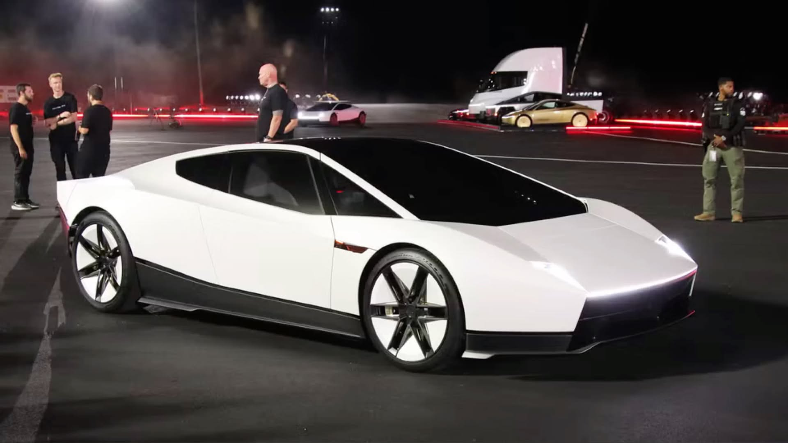
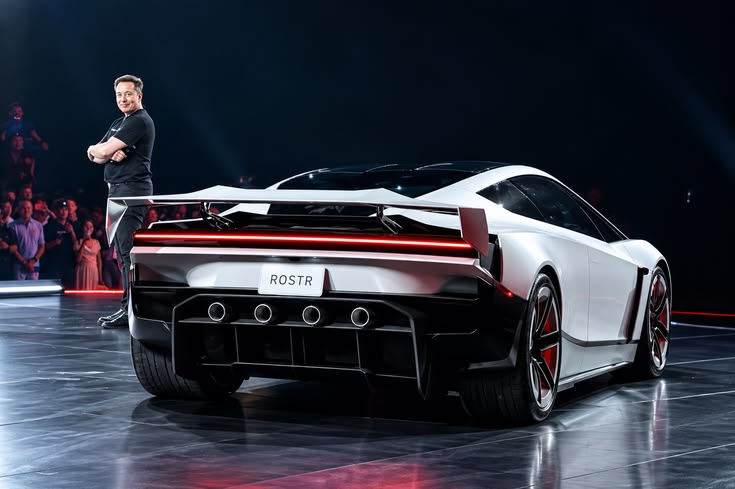

Performance
La version de route à deux places, avec aérodynamique active et ventilateurs d'aspiration censés plaquer la voiture au sol.
moins de 1,6 sPrésentée le 15 octobre 2026 au Texas, la deuxième génération du Tesla Roadster passe de 0 à 97 km/h en moins de 1,6 s et peut décoller grâce à ses propulseurs à gaz froid.

Chiffres annoncés par Tesla lors de la présentation, tels que rapportés par la presse. Source : Tom's Guide France, article sur le nouveau Roadster, consulté le 03/11/2026.

Pendant la présentation, le Roadster a grimpé sur une rampe inversée, pivoté sur lui-même en l'air, puis s'est posé en douceur sur ses roues. Il a aussi survolé plusieurs véhicules.
Choisissez le Roadster qui correspond à votre usage.
La version de route à deux places, avec aérodynamique active et ventilateurs d'aspiration censés plaquer la voiture au sol.
moins de 1,6 sDes propulseurs à gaz froid à l'arrière, de la même famille que ceux des fusées SpaceX, pour décoller et accélérer.
moins de 0,9 sUne monoplace sur invitation, non homologuée pour la route : la plus rapide des trois versions.
moins de 0,59 sLes réservations sont rouvertes aux conditions de 2017 : 50 000 $ au total, dont 5 000 $ à verser immédiatement et le solde sous dix jours.